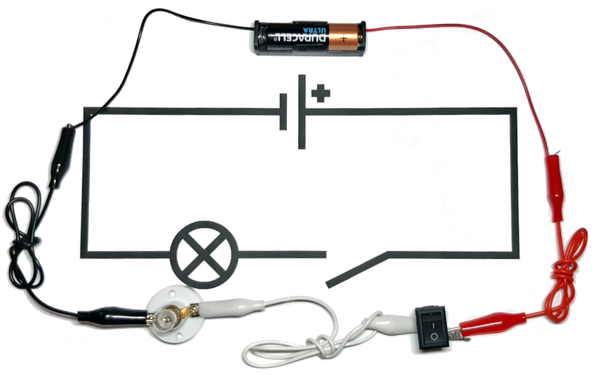

Representation
Why Computers Work (part 3)
It's easy to imagine one thing representing another. We do this all the time.
For example, in the UK the Royal Standard always flies from buildings containing the monarch. This flag is understood to represent the Queen's presence and somebody ensures it is flown at the right moment from the buildings she visits.

Here's a twist...
Instead of the Royal Standard, a light on top of a building's flag pole could represent the Queen's presence. If it were on, she was present.
Notice there are two possible states for the Queen (she's either present or not), this is mirrored by the two possible states for the light (it is either illuminated or not), and we are playing along in a sort of game that provides meaning for such a representation (we understand that the Queen is present if the light is illuminated, just like we do when we see the flying of the Royal Standard). One thing (a light) is representing something else (the Queen's presence).
Such a device could be built using the circuit shown in the diagram below:
At the top is the symbol representing a battery that supplies current for the other components. Lines show how the battery and other components connect. The circle containing a cross represents a bulb and the gap created by the line veering off at an angle represents a switch. In the following photograph the real-world components, shown next to their symbols, connect to form the circuit:

The switch can be in two possible states: on (creating a circuit so current moves through the components, thus lighting the bulb) or off (where the circuit is broken, stopping the current and extinguishing the bulb).
Here's a royal brain twist for you: can you think of something else that deals with only two possible states?
If you thought, "propositional logic" then you deserve a knighthood!
The two possible states of the circuit, as controlled by the switch, mirrors the two possible states encountered in propositional logic: on/true and off/false. We could play along with the logical game and say that the circuit represents the truth value of the proposition, "the Queen is present".
Here's another royal brain twist: it's also possible to make simple circuits that mimic the logical operations found in propositional logic ("and", "or", "not" and all the rest).
By re-arranging the physical components of the circuit, from a logical point of view, the illuminated bulb could represent the presence of both the Queen and/or her hier, the Prince of Wales:
- The Queen is present AND the Prince of Wales is present.
- The Queen is present OR the Prince of Wales is present.
Remember, propositional logic doesn't care about the meaning of the propositions ("the Queen is present", "the Prince of Wales is present"), so the circuits' behaviour could be generalised to represent "A and B" or "A or B".
Here's the diagram for the "and" circuit:

The two switches are labelled to show how they represent the propositions "A" and "B". Because of the consecutive arrangement of the switches, the states of the switches and the resulting behaviour of the bulb match the truth table for "and": if both switches are on, then the bulb is on (representing "true"), otherwise, in all other combination of switch states, the bulb is off (representing "false").
Here's the diagram for the "or" circuit:

In this case, the parallel arrangement of the switches causes the circuit to mirror the truth table for the logical "or" operation. If only one (or both) of the switches are on, then the bulb is on, otherwise, when both switches are off, the bulb is off.
The circuit for "not" is slightly different and allows me to introduce a new (but important) electrical component: the transistor.
Transistors control flow of electrical current with three connections called "gate", "source" and "drain". Electrical current flows between "source" and "drain" only if current is also applied to the "gate" connection. Rather than controlling the flow of current with a switch operated by a person, a transistor is controlled by another electrical component via the "gate".
Transistors work because they're made from two different types of silicon, a material that only conducts electricity under certain conditions (which is why it's called a semi-conductor). The silicon is mixed with certain impurities to create p-type and n-type silicon. In the diagram below the p-type silicon is shown in blue, the n-type silicon in red and the gate connection in green.
In a similar way to how "and" and "or" circuits behave as a result of the physical arrangement of their components, the cleverness of transistors comes about because of how the p-type and n-type parts are physically arranged. The "source" terminal is connected to an n-type layer (in red, on the left of the diagram), the "gate" (in green) to the p-type barrier layer (in blue) and "drain" to another n-type layer (in red, on the right of the diagram).
In very simplistic terms, if a voltage is applied to p-type silicon via the "gate" connection, it behaves like n-type silicon. When in this state it is no longer an insulating barrier between the "source" and "drain" and electricity can flow. This is shown in the diagram below.

Transistors come in many shapes and sizes, but are most common as extraordinarily small components etched onto silicon (i.e. microchips). The image below was taken by an electron microscope and shows a transistor on a microchip with the parts labelled.
Back to the "not" circuit: remember that electricity will always flow the shortest way to "ground" (for instance via a lightning rod). The following (very simplified) circuit diagram shows how a transistor and ground is used to make something that behaves like a logical "not".
The transistor is represented by a circle pierced by three lines. The source is represented by the line entering the circle at the 1 o'clock position, the drain by the line at the 5 o'clock position and the gate buy the line at 9 o'clock.
On the left, the button labelled "A", attached to the gate, is off (representing false) so current is unable to pass through the transistor to ground. As a result, the electrical current (in red) flows through the lamp to illuminate it (representing true). On the right, the button is on (in green, representing voltage applied to the transistor's gate). The current is able to flow through the transistor from the source to the drain and then to ground (so no current flows to the bulb to illuminate it). The red arrows make it clear how the current flows.
Thus, the lamp is always in the opposite logical state to the switch and the circuit mirrors the behaviour of a logical "not". If the switch is off, the light is on and if the switch is on, the light is off.
The important brain twist is understanding that we can design physical systems (i.e. electrical circuits) that appear to behave as logical ones.
Yet another seemingly contradictory brain twist is to remove "logic" from any explanation of the circuits.
From a scientific point of view of the circuit, an observer can only describe physical properties and behaviours in terms of electrical current, the mechanical behaviour of switches, the incandescent properties of filament and the electrochemical nature of batteries and transistors. You won't find any formal rules of propositional logic here, nor meaning ascribed to physical states of affairs. The scientific view of the circuit is the "how" of the circuit.
Yet if we agree the on/off states of the switches represent the true/false values of propositions "A" and "B" and the on/off status of the light represents a resulting logical outcome (true/false) then the behaviour of the first circuit undoubtedly mirrors the truth table for "and". Remember, it's not logic that makes the circuit behave in this way (it's actually physics!), but because we play along in a game where physical states mirror and thus accurately represent logical ones, then the circuit acquires an additional layer of meaning in terms of the rules of logic.
This is the "why" of the logical circuit: a human is needed to understand what the behaviour of a physical object apparently represents. Without the meaningful human-ascribed behaviour there is just an object described by physics.
Here's another instance of this phenomenon: there is no physical law described by science that explains why green means "go" and red means "stop" at traffic lights - yet the traffic lights are very much a physical system that can be described by science. If meaning is involved, then humans and their cultural norms are needed to make sense of it to explain what it represents.
Teleology (using meaningful purpose or design to explain phenomena) isn't a part of the "how" of physics-based descriptions of the world - yet humans commonly retrofit purpose or design to describe physical systems that exhibit behaviour appearing to represent something meaningful, such as logical operations or traffic lights. The brain twist is to realise where and when such human interventions assign meaning to the physical world, such as in the case of the logic circuits I've described.
Imagine an arrangement of many transistor-based circuits (representing various logical operations), chained together so the output of one circuit provides the input to the next. This yet-more-complicated arrangement of logical circuits defines the meaningful behaviour of a device. Such a device, like its constituent logical circuits, connects to the outside world via inputs and outputs and has a strange capability: to change its own state in order to store and process information.
The next post will explore such a machine.